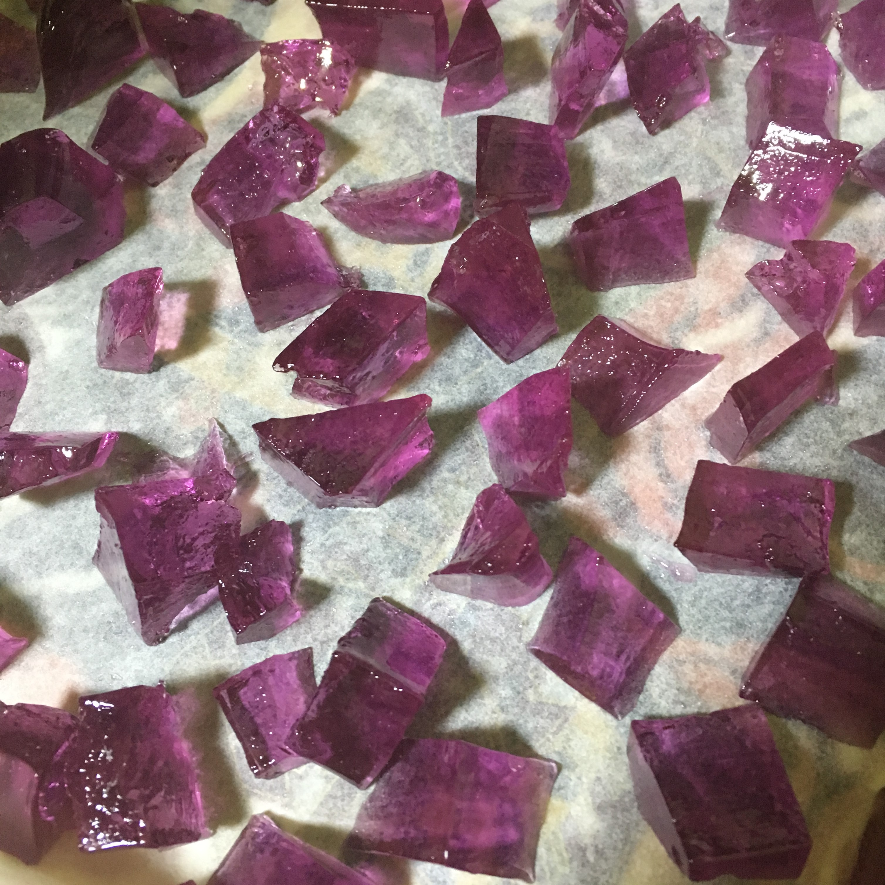
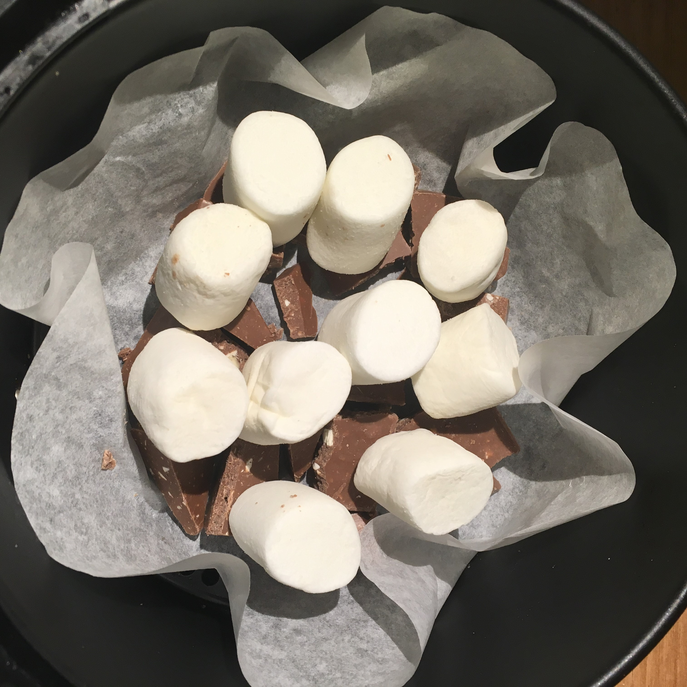
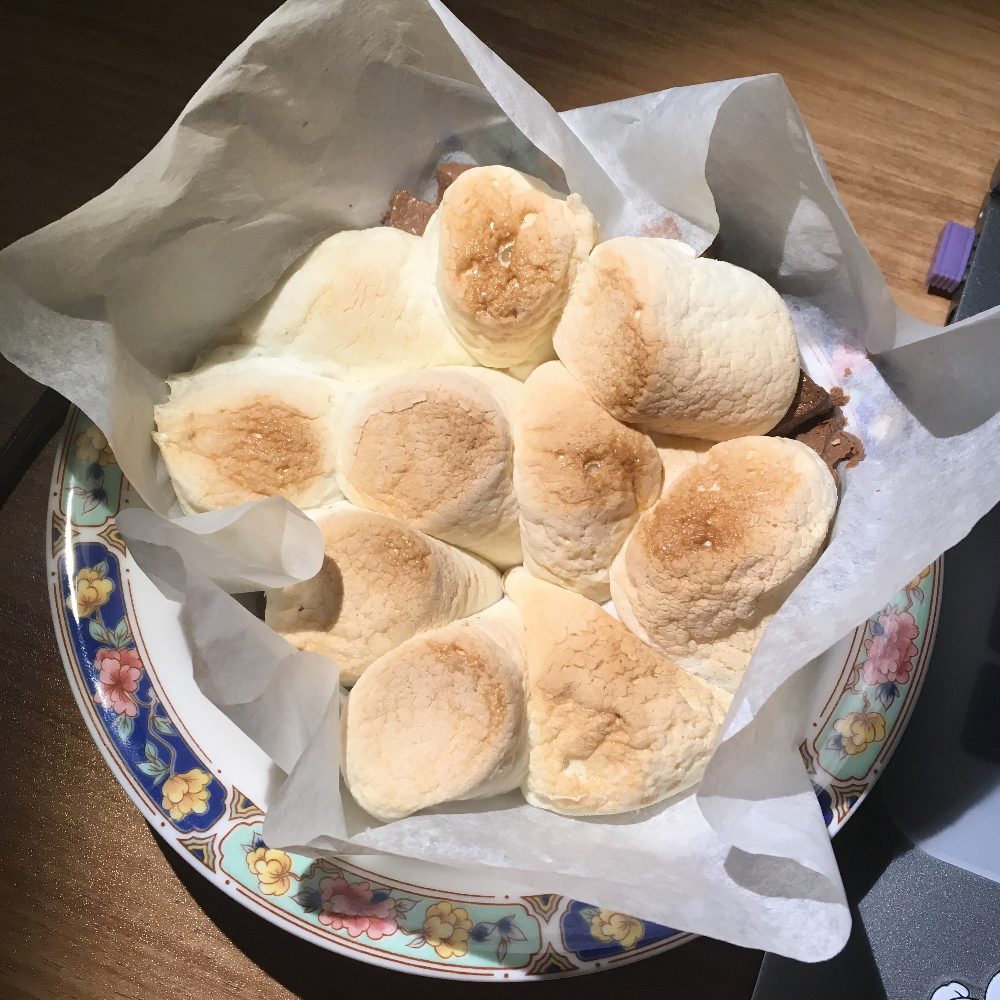

Dessert
💎코하쿠토💎
①색이 있는 음료수를 설탕, 한천과 함께 가열한다.
②냉장고에서 3시간 이상 냉장한다.
③젤리형태로 굳으면 보석모양으로 자르고 3일 실온에서 건조시킨다.
🍓딸기탕후루🍓
①설탕을 찬물에 한방울 떨어뜨렸을때 바로 단단해질 정도까지 중탕한다.
②딸기를 설탕에 담가 코팅한 후 굳힌다.
딸기탕후루 이팅사운드 ASMR➷
🍫스모어🍫
①초콜렛을 쪼개서 바닥에 깐다.
②초콜릿 위에 마시멜로우를 세워서 적당한 간격으로 올린다.
③내부가 녹을 때까지 낮은 온도에서 굽는다.
